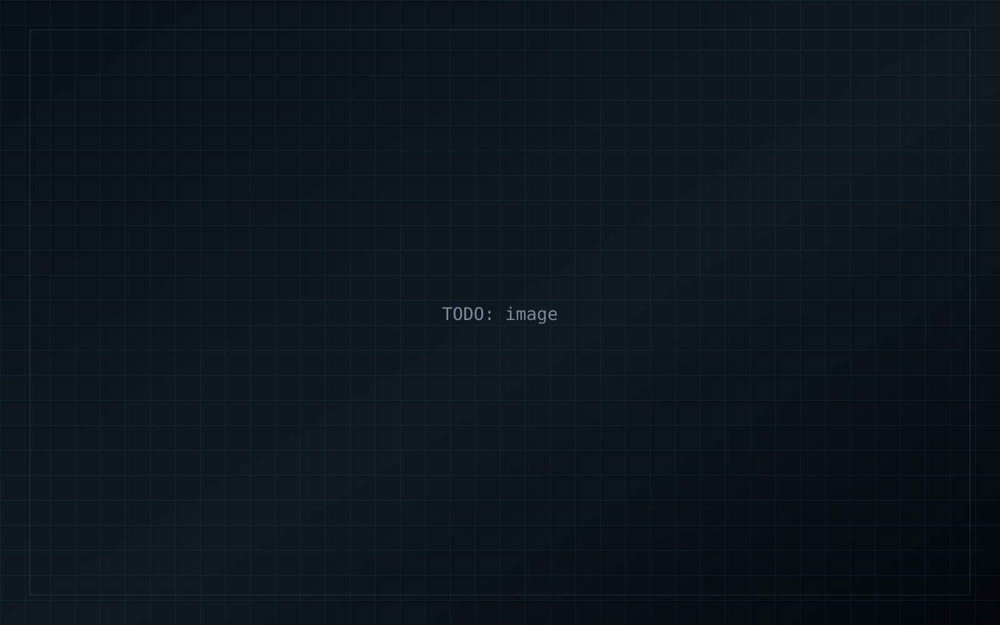

TODO: Year or type
TODO: Project title
TODO: one-line summary
Overview
TODO: What this project is, in two or three sentences. Do not invent results.
Problem
TODO: The constraint or question this work tried to answer.
Approach
TODO: Methods, setup, simulation assumptions. Keep claims factual.
Results
TODO: What the figures show. Use placeholders until real stills exist.
Gallery
Key takeaways
- TODO: takeaway 1
- TODO: takeaway 2
- TODO: takeaway 3